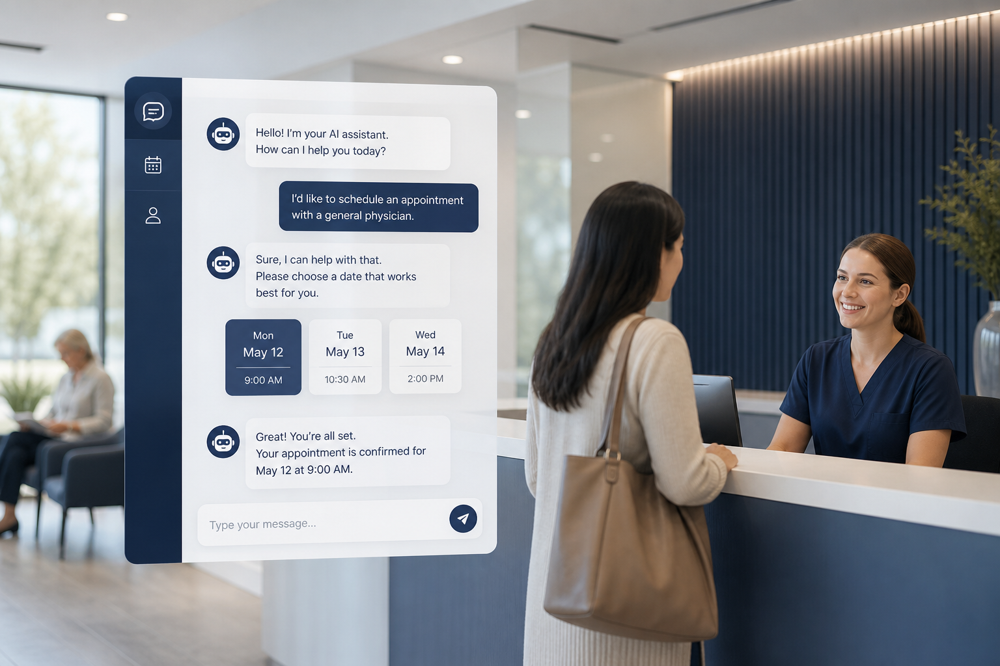
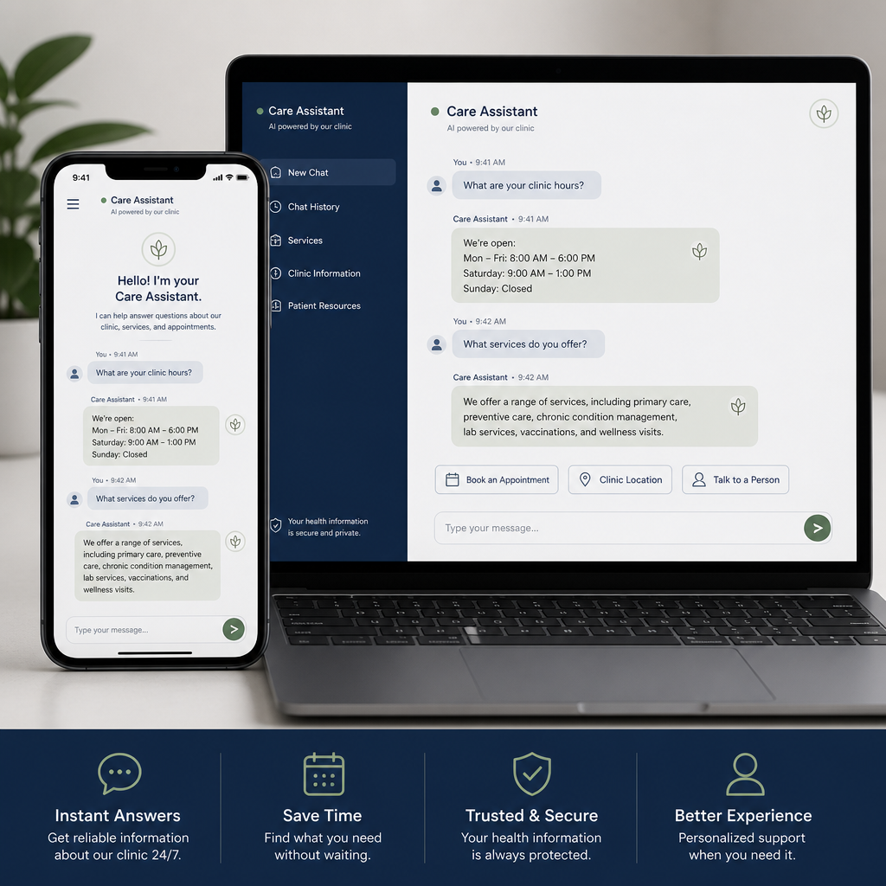
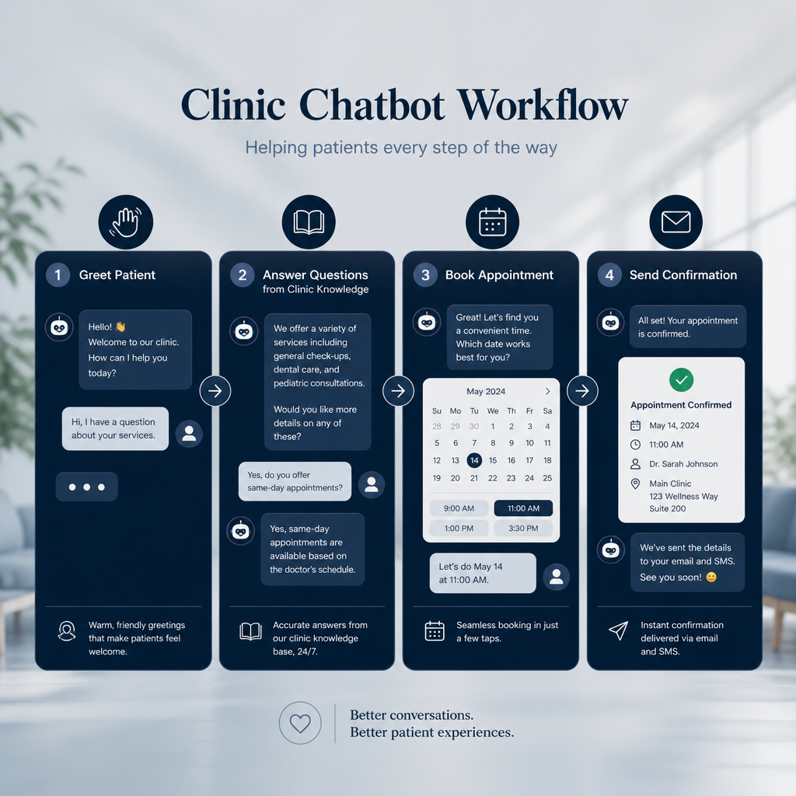
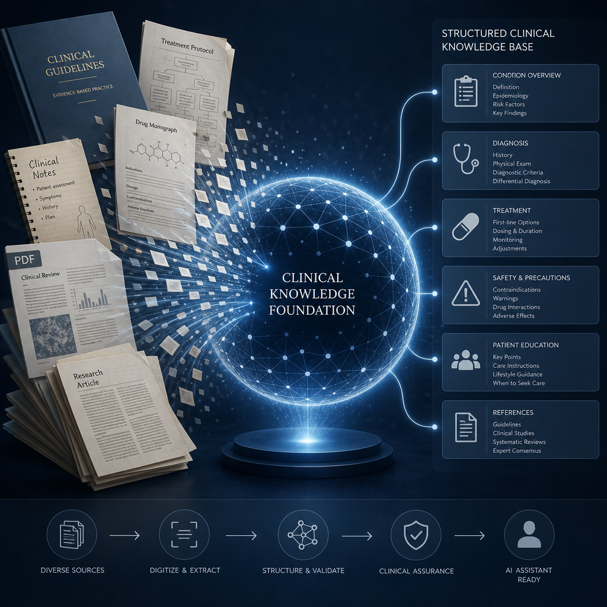
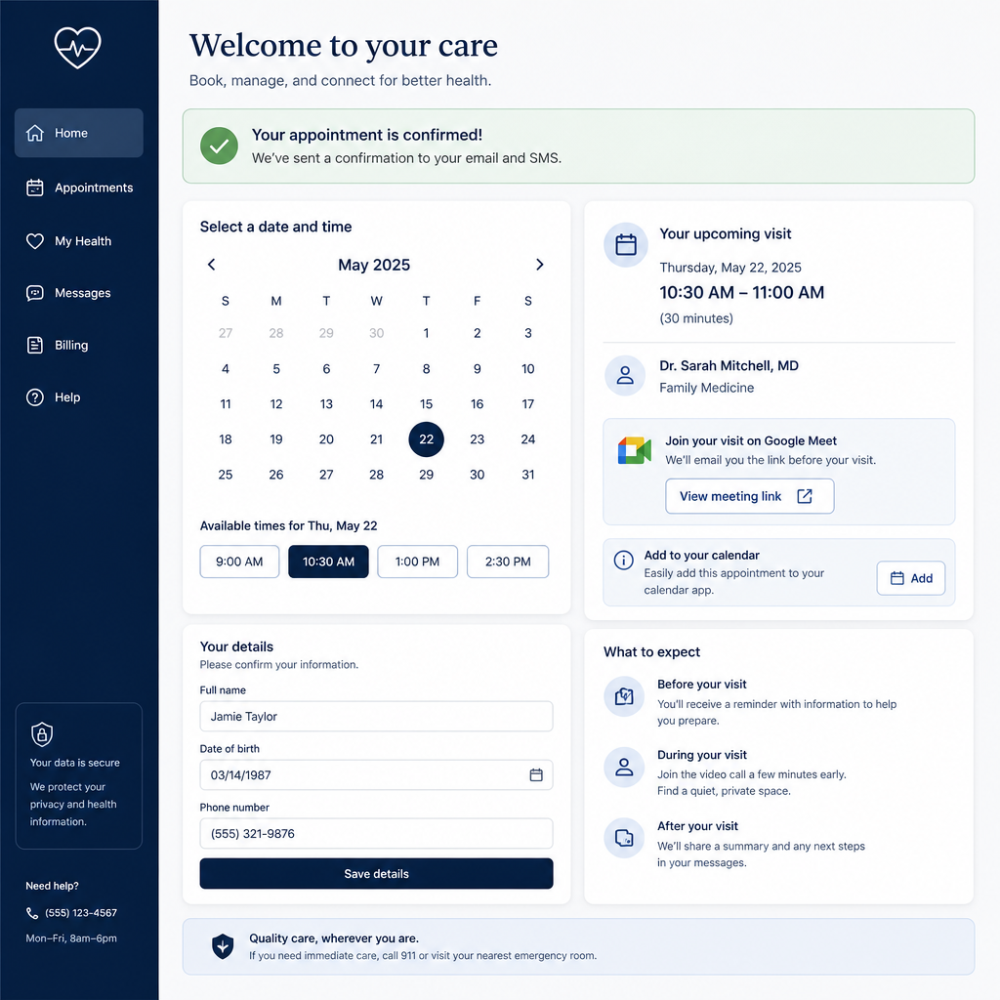
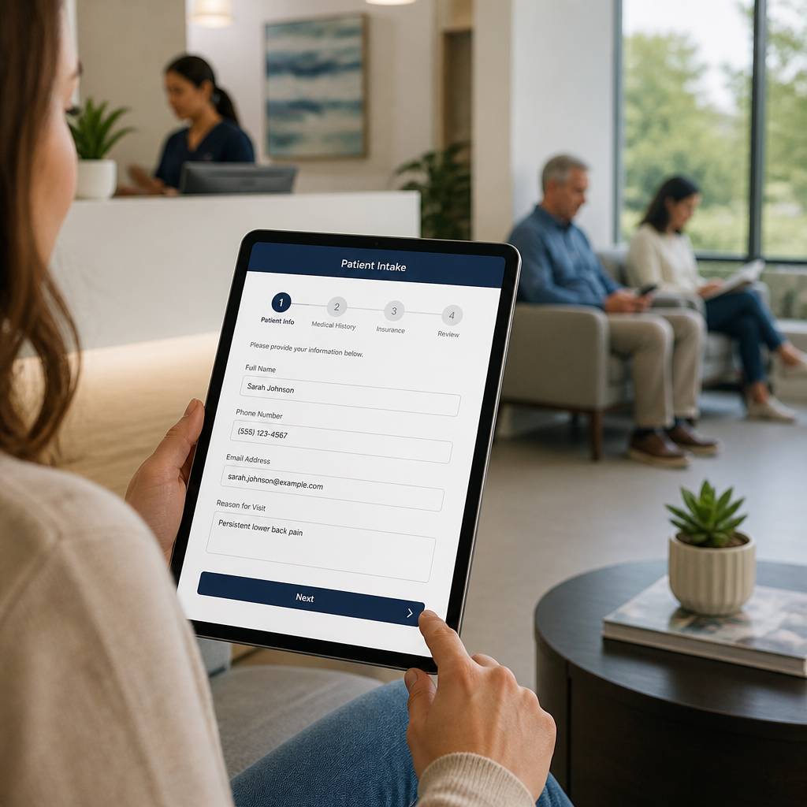
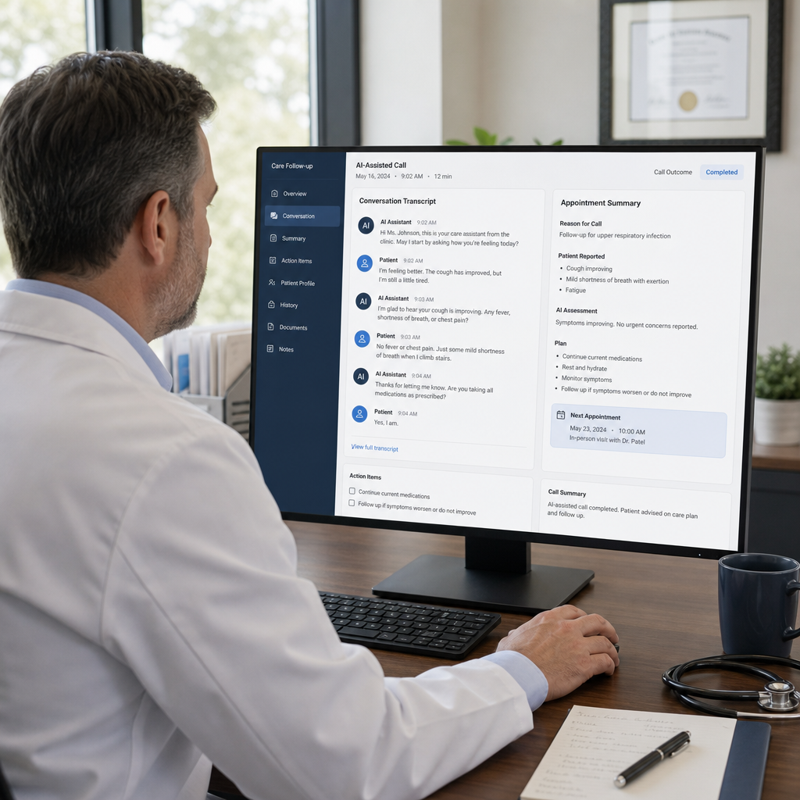

Medical Bot Console is a clinic-facing AI front desk. It answers patient questions from your clinic knowledge, handles inbound phone calls, books appointments, runs outbound outreach campaigns, and gives your team a secure console to review conversations, calls, and schedules — day or night.
1. Introduction & what Medical Bot Console does
Medical Bot Console (product name: Healthcare Chat Bot) acts as an always-available digital front desk for your medical practice. It is designed to reduce missed calls, standardize patient intake, and keep appointment booking consistent — while keeping clinical decision-making with licensed staff.

1.1 Core capabilities
| Capability | What it means for your clinic |
|---|---|
| Web chat | Patients message your clinic assistant in the browser. Answers are based on your clinic knowledge and safety rules. |
| Inbound phone (voice AI) | When patients call your clinic number, Medical Bot Console can greet them, answer questions, and collect booking details using natural conversation. |
| Appointment booking | The bot collects required intake fields, confirms the visit, and creates an appointment visible in the Appointments calendar. |
| Knowledge base | You control what the bot says — FAQs, clinic policies, hours, directions, and safety prompts. |
| Conversation flows | Visual call/chat scripts (Start → questions/actions → End) so conversations follow your clinic process. |
| Campaigns | Outbound dialing to patient lists for reminders, follow-ups, or outreach — with status tracking per contact. |
| Operations console | Dashboard KPIs, inbox, call transcripts, doctor roster, user management, and audit logs. |
1.2 What Medical Bot Console is not
Medical Bot Console is an informational and operational assistant. It does not diagnose conditions, prescribe treatment, or replace a licensed clinician. Emergency situations should be directed to 911 or urgent care according to your clinic policy.
2. How patients reach the bot
Patients interact with Medical Bot Console through these channels:
Web chat
A clinic web chat widget (connected to Medical Bot Console) lets patients type questions or use voice in the browser. Theme colors and clinic identity can match your clinic branding.
Inbound phone
Calls to your Twilio-connected clinic number are answered by the assigned Agent. The assistant greets the caller, follows your flow/knowledge, and can book appointments.

2.1 Typical patient journey
- Welcome & intent. The bot greets the patient and identifies why they are contacting the clinic (information, booking, existing appointment, etc.).
- Knowledge-aware answers. For FAQs and clinic information, Medical Bot Console answers from your Knowledge content and safety prompts.
- Structured booking (when requested). The bot collects required intake fields and confirms the appointment.
- Handoff / continuity. Staff can review the conversation or call transcript in Medical Bot Console and follow up as needed.

3. Signing in & user roles
3.1 Accessing Medical Bot Console
- Open your clinic’s Medical Bot Console URL (typically ending with /admin).
- Confirm you see the Medical Bot Console logo on the login screen.
- Sign in with the email and password provided by your administrator.
- After a successful login you land on the Dashboard. The same logo appears at the top of the sidebar.
Sessions expire after 60 minutes of use. When the session expires, sign in again. Do not share login credentials. Always sign out on shared workstations.
3.2 Roles and permissions
| Role | Can access | Typical use |
|---|---|---|
| Admin | Dashboard, Clinics, Appointments, Users, Doctors, Agents, Knowledge, Flows, Campaigns, Calls, Audit logs | Full platform configuration and oversight across clinics |
| Clinic Staff |
Dashboard, Appointments, Doctors, Agents, Knowledge, Flows, Campaigns, Calls
(not Clinics, Users, or Audit logs) |
Day-to-day operations for assigned clinic(s) |
Clinic Staff accounts are limited to the clinics assigned to them. Admins can manage all clinics and user accounts.
3.3 Navigation overview
The left sidebar lists the modules available to your role:
| Menu item | Purpose |
|---|---|
| Dashboard | Operations overview, KPIs, and conversation inbox |
| Clinics | Clinic profiles, branding, and agent assignment (Admin) |
| Appointments | Calendar of booked visits (Eastern Time) |
| Users | Create and manage Admin / Clinic Staff accounts (Admin) |
| Doctors | Provider roster used by the clinic |
| Agents | Bot profiles (AI, voice, phone, meeting, flow, knowledge) |
| Knowledge | Prompts and uploaded clinic documents / FAQs |
| Flows | Visual conversation graphs |
| Campaigns | Outbound calling programs and patient lists |
| Calls | Inbound call history and transcripts |
| Audit logs | Who accessed what, when, and from where (Admin) |
4. Recommended go-live checklist
Use this sequence when bringing a new clinic onto Medical Bot Console. Complete each step before going live with patients.
- Create users. In , create Admin and Clinic Staff accounts. Assign Clinic Staff to the correct clinic(s).
- Prepare Knowledge. In , review the default safety prompts and add clinic-specific FAQs, hours, insurance notes, and policies.
- Build or select a Flow. In , design the conversation path (greeting → questions → booking actions → End).
- Configure an Agent. In , complete the wizard: General → OpenAI → Voice → Twilio → Meeting → Flow & knowledge.
- Register the Clinic. In , enter profile details, upload an avatar, choose a theme color, and assign the Agent.
- Add Doctors. In , maintain the provider roster patients and staff will reference.
- Connect telephony. Ensure the clinic’s Twilio voice number points to the Medical Bot Console inbound webhook (configured by your technical team).
- Test thoroughly. Use Agent Test Lab (flask icon on Agents / Clinics) for Webchat, Inbound, and Campaign simulations before enabling live traffic.
Go live with Knowledge and Test Lab validated first. Outbound Campaigns should be enabled only after inbound chat/phone behavior is approved by clinic leadership.
5. Dashboard & conversation inbox
The Dashboard is the home screen for daily operations. It summarizes activity and gives quick access to recent conversations.
5.1 What you will see
- KPI cards — conversations, messages, calls, and appointments at a glance.
- Daily channel volume chart — switch between 7 / 30 / 60 day views to spot trends.
- Today’s appointments — visits scheduled for the current day.
- Clinic performance — comparative activity across clinics (when applicable).
- Inbox — recent patient conversation threads for review.
5.2 Using the inbox
- Open .
- Select a conversation in the inbox panel.
- Review the message history to understand patient intent and what the bot already collected.
- Follow up by phone or in person if the conversation needs human attention.
Check the inbox at the start of each shift and after busy periods. Flag incomplete bookings (missing phone/email/DOB) and complete them manually if needed.
6. Clinics
(Admin only) stores each practice location’s identity and which Agent serves that location.
6.1 Clinic profile fields
| Field | Description |
|---|---|
| Name | Full clinic name shown to staff and used in greetings |
| Acronym | Short code used in templates (e.g. greeting placeholders) |
| Clinic ID | External or internal identifier for the location |
| Address / phone / email / website / portal | Contact and location details |
| Avatar | Clinic image used in the console and patient-facing branding |
| Theme color | Brand color passed to the web chat experience |
| Assigned agent | Which bot profile answers for this clinic |
6.2 Assigning an agent
- Open the clinic record.
- Select an active Agent from the assignment control.
- Save. New chat and phone sessions for that clinic use the assigned Agent.
Admins may also use Import from API to sync clinic records from an external source when that integration is enabled for your organization.
6.3 Greeting placeholders
Greetings can include dynamic clinic values:
- $clinic_name$ — full clinic name
- $clinic_acronym$ — short name
- $clinic_city$ — city from the clinic address
7. Agents (bot profiles)
An Agent is the complete bot configuration for how Medical Bot Console speaks, thinks, dials, and books. One Agent is typically assigned to one Clinic, though you may maintain multiple Agents (for example, inbound vs. campaign).
7.1 Creating or editing an Agent
Open and use the setup wizard. Steps:
| Step | What you configure |
|---|---|
| 1. General | Title, status (active/inactive), description of the agent’s purpose |
| 2. OpenAI | API key and models for chat, realtime voice, transcription, and TTS |
| 3. Voice | Realtime voice selection and preview so the phone experience matches your brand tone |
| 4. Twilio | Telephony credentials used for inbound/outbound calling for this agent |
| 5. Meeting | Meeting/calendar provider: Google (Meet + OAuth fields), ECW, or Azul (API endpoint) |
| 6. Flow & knowledge | Link the conversation flow and knowledge documents this agent should use |
7.2 Duplicating an Agent
Use Duplicate to copy an existing Agent into a prefilled create form. This is useful when opening a second location with similar settings — then adjust clinic-specific Twilio, meeting, or knowledge links before saving.
OpenAI and Twilio credentials are sensitive. Only Admins or authorized staff should enter them. Rotate keys if a staff member with access leaves the organization.
8. Knowledge (training content)
controls what the bot is allowed to say. Keeping this section accurate is the single most important quality factor for patient experience.

8.1 Built-in prompt categories
| Prompt | Purpose |
|---|---|
| Assistant & safety | Core behavioral rules: no diagnosis, HIPAA-aware handling, off-topic deflection, OTC-only medication mentions, red-flag escalation, multilingual warm tone. |
| Voice style | Keeps phone replies short, natural, and free of markdown or lists. |
| Appointment booking | Guides how booking language and confirmation should work for your clinic. |
8.2 Adding clinic documents
- Go to .
- Create or edit a knowledge item and attach documents as needed.
- Supported uploads include .txt, .md, .csv, .pdf, and .docx.
- Assign the knowledge to the relevant clinic(s) and set it Active.
- Link the knowledge from the Agent’s Flow & knowledge step.
8.3 What to put in Knowledge
- Office hours, holiday closures, parking, and directions
- Accepted insurance plans and referral requirements
- New patient vs. established patient instructions
- Preparation notes (fasting, bring ID/insurance card, arrive early)
- Clinic phone numbers and when to call vs. use the bot
- Approved FAQ answers reviewed by clinical leadership
Do not place protected health information (PHI) from real patients into Knowledge documents. Knowledge is for general clinic information and approved educational content only.
9. Conversation flows
is a visual builder for structured conversations. Flows tell the bot how to move from greeting to questions, actions, and ending the call.
9.1 Node types
| Node | Behavior |
|---|---|
| Start | Entry point of the conversation |
| Message | Says a fixed or templated message to the patient |
| Question | Asks for information and waits for a reply |
| Function | Runs a clinic action (book, cancel, SMS, transfer, etc.) |
| Branch | Routes the path based on the patient’s answer |
| End | Ends the conversation / hangs up the call |
9.2 Available function actions
- Book appointment
- Cancel appointment
- Reschedule appointment
- Send appointment reminder
- Send voicemail
- Send text message
- Send email
- Transfer to human
- Collect payment
- Update patient info
You can Duplicate a flow to create a deep copy of the graph for another clinic or campaign variant.
Keep flows short. Collect only what staff need. Always provide a path to transfer to a human for clinical concerns, billing disputes, or frustrated callers.
10. Appointments & doctors

10.1 Appointment calendar
Open to view the schedule in month or week views. All appointment times are managed in Eastern Time (America/New_York).
- Review today’s and upcoming visits from the Dashboard and Appointments pages.
- Cancel appointments from the calendar when a visit should not proceed.
- After cancellation, notify the patient through your normal clinic process if needed.
10.2 What the bot collects during booking
When a patient requests an appointment, Medical Bot Console gathers these required fields:
| # | Field | Example prompt to patient |
|---|---|---|
| 1 | Full name | What is your full name? |
| 2 | Phone number | What is the best phone number to reach you? |
| 3 | Email address | What is your email address? |
| 4 | Date of birth | What is your date of birth? |
| 5 | New or existing patient | Are you a new patient or an existing patient? |
| 6 | Preferred date & time | What date and time would you like for the appointment? |

After intake is complete, Medical Bot Console confirms the visit, creates the appointment record, and may generate a meeting link (for example Google Meet) when the Agent’s meeting provider is configured. Staff notification emails can also be sent when email alerts are enabled.
10.3 Doctors
Use to maintain provider profiles (name, photo, and related details). Keep this roster current so patients and staff see the correct providers.
11. Outbound campaigns

11.1 Campaign lifecycle
| Status | Meaning |
|---|---|
| Draft | Being configured; not ready to dial |
| Ready | Configured and awaiting schedule / start |
| Running | Actively placing outbound calls |
| Paused | Temporarily stopped by staff |
| Completed | Finished dialing the list |
11.2 Creating a campaign
- Open and create a new campaign (or duplicate an existing one).
- Select the clinic, active Agent, and conversation Flow.
- Set the schedule window and retry behavior according to clinic policy.
- Save as Draft, then move to Ready when configuration is complete.
- Open the campaign detail page to manage the patient list.
11.3 Importing patients
- On the campaign detail page, upload an Excel (.xlsx / .xls) or CSV file.
- Map columns (name, phone, and other fields) in the import dialog.
- Confirm the import and review the contact list.
- Optionally sync patients from an external API if your organization uses that integration.
11.4 Contact outcome statuses
| Status | Meaning |
|---|---|
| Pending | Not yet called |
| Calling | Call in progress |
| Success | Completed successfully per campaign criteria |
| Reject | Declined or unsuccessful |
| Interesting | Engaged / needs follow-up (positive interest) |
| Not interesting | No interest expressed |
Only call patients who have consented to outreach under your clinic’s policies and applicable regulations. Respect quiet hours and do-not-call preferences.
Duplicate campaign copies campaign configuration only — patient lists are not copied. Re-import or re-sync contacts for the new campaign.
12. Calling history
stores inbound phone sessions for quality review and continuity of care coordination.
- Open a call record to review the transcript.
- Listen to recorded audio when available (waveform player).
- Delete records only when authorized by your clinic’s retention policy.
Spot-check several calls each week. Confirm greetings, booking accuracy, escalation language, and whether Knowledge answers match current clinic policy.
13. Users & audit logs
13.1 User management (Admin)
- Open .
- Create a user with email, password, and role (Admin or Clinic Staff).
- For Clinic Staff, assign one or more clinics.
- Update or deactivate accounts when staff change roles.
13.2 Audit logs (Admin)
provide a HIPAA-oriented access trail showing who performed what action, when, and from where. Use filters and page size controls to investigate activity. Clearing logs should follow your organization’s compliance policy.
14. Testing with Agent Test Lab
Before exposing patients to a new Agent, Flow, or Knowledge change, validate behavior in Agent Test Lab (flask / test icon from Agents or Clinics).
14.1 Test modes
| Tab | Use it to verify |
|---|---|
| Webchat | Browser chat answers, tone, booking intake, and knowledge accuracy |
| Inbound | Phone-style conversation, greeting, and voice flow behavior |
| Campaign | Outbound script behavior before launching a live campaign |
14.2 Suggested test script
- Ask an on-topic FAQ (hours, parking, insurance).
- Ask an off-topic question — confirm polite deflection.
- Request an appointment and complete all intake fields.
- Provide incomplete or invalid details — confirm the bot asks again.
- Describe an emergency symptom — confirm 911 / urgent care guidance.
- Ask for a diagnosis — confirm the bot refuses and redirects appropriately.
- Verify the appointment appears on the Appointments calendar.
15. Safety, privacy & clinical boundaries
Medical Bot Console ships with mandatory safety behavior in the Assistant & safety knowledge prompt. Clinic leadership should review these rules and keep them enabled.
15.1 Built-in safety principles
- No diagnosis — the bot must not say or imply “you have X.”
- No clinical replacement — it is a support tool, not a clinician.
- Limited medication guidance — OTC mentions only; no personalized dosing.
- Red-flag escalation — directs callers to urgent care or 911 when warranted.
- Privacy awareness — avoid collecting unnecessary identifiers in Knowledge or free-form chat.
- Off-topic deflection — stays focused on clinic services and general health information.
- Multilingual replies — answers in the patient’s language when possible, in a warm, clear style.
15.2 Recommended clinic policies
- Designate a clinical reviewer for Knowledge content changes.
- Train staff on when to take over from the bot (complex clinical questions, angry callers, emergencies).
- Define retention periods for call recordings and transcripts.
- Use unique staff accounts — never share passwords.
- Review Audit logs periodically.
16. Day-to-day staff workflows
16.1 Opening checklist (each morning)
- Sign in to Medical Bot Console.
- Review Dashboard KPIs and today’s appointments.
- Scan the inbox for overnight conversations needing follow-up.
- Check Calls for any incomplete or escalated overnight phone sessions.
- Confirm any Running campaigns are behaving as expected.
16.2 During the day
- Monitor new appointments created by the bot; complete chart prep as usual.
- Update Knowledge immediately when hours, providers, or policies change.
- Pause campaigns during unexpected clinic closures.
- Transfer complex callers to human staff per clinic protocol.
16.3 Closing checklist
- Reconcile same-day bot bookings against the practice management / EHR schedule.
- Note any Knowledge corrections for the next business day.
- Sign out of shared workstations.
17. Troubleshooting
| Symptom | Likely cause | What to try |
|---|---|---|
| Cannot sign in | Wrong password or expired/disabled account | Verify email; ask Admin to reset credentials; confirm role is active |
| Session ends unexpectedly | 60-minute session timeout | Sign in again; avoid leaving the console idle mid-task |
| Bot gives outdated answers | Stale Knowledge content | Update Knowledge; confirm Agent still links to the correct knowledge items; re-test in Test Lab |
| Phone not answered by Medical Bot Console | Twilio / Agent / clinic assignment issue | Confirm clinic has an active assigned Agent; verify Twilio settings with your technical team |
| Appointments not appearing | Incomplete intake or timezone confusion | Check Calls/Inbox for missing fields; remember calendar uses Eastern Time |
| Campaign not dialing | Status not Running, empty list, or inactive Agent | Confirm status, patient import, schedule window, and active Agent/Flow |
| Menu items missing | Role permissions | Clinic Staff cannot open Clinics, Users, or Audit logs — ask an Admin |
| Web chat theme wrong | Clinic theme color not set | Update Theme color on the Clinics page and re-test the widget |
18. Glossary
| Term | Definition |
|---|---|
| Healthcare Chat Bot | Public product name of the platform |
| Medical Bot Console | Brand name of the clinical operations console |
| Agent | Full bot behavior profile (AI, voice, phone, meeting, flow, knowledge) |
| Clinic | A practice location with its own profile and assigned Agent |
| Knowledge | Training content and safety prompts that shape bot answers |
| Flow | Visual conversation graph from Start to End |
| Campaign | Scheduled outbound calling program with a patient list |
| Webchat | Browser-based patient chat channel |
| Inbound | Patient calls the clinic phone number |
| Appointment intake | Structured collection of booking fields |
| Meeting provider | Google / ECW / Azul integration used when creating visits |
| Clinic Staff | Role with clinic-scoped operational access |
| Audit log | Record of administrative access and actions |
| Eastern Time (ET) | System timezone for appointment scheduling |
19. Support & document control
19.1 Getting help
- Check this manual’s Troubleshooting section.
- Escalate configuration issues (Twilio, OpenAI keys, server URL) to your technical administrator.
- Escalate clinical content questions to your clinic’s designated Knowledge reviewer.
19.2 Document information
| Item | Detail |
|---|---|
| Document title | Medical Bot Console User Manual |
| Product | Healthcare Chat Bot (Medical Bot Console) |
| Version | 1.0 |
| Audience | Medical clinic administrators and front-desk staff |
| Classification | Internal clinic operations — do not include patient PHI in printed copies beyond operational need |